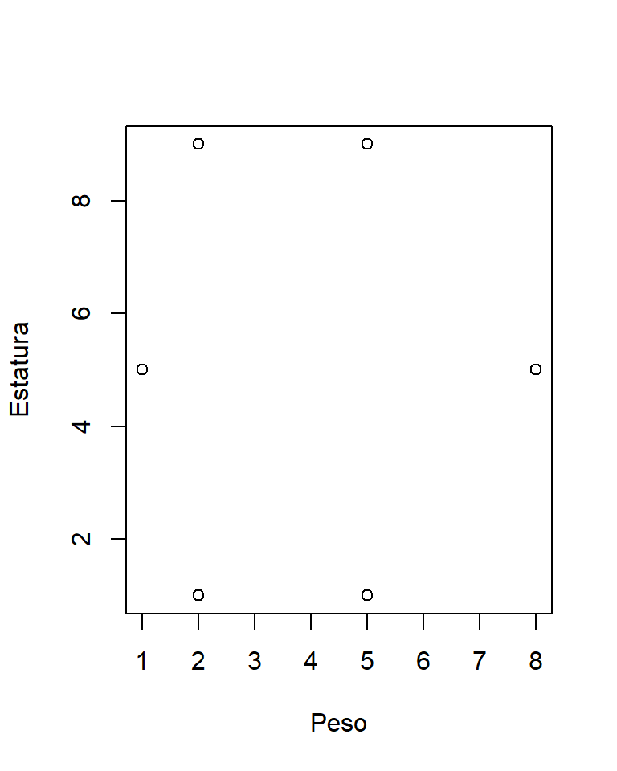
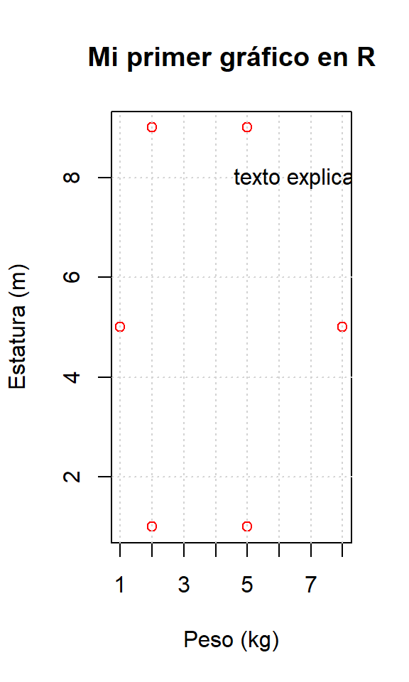
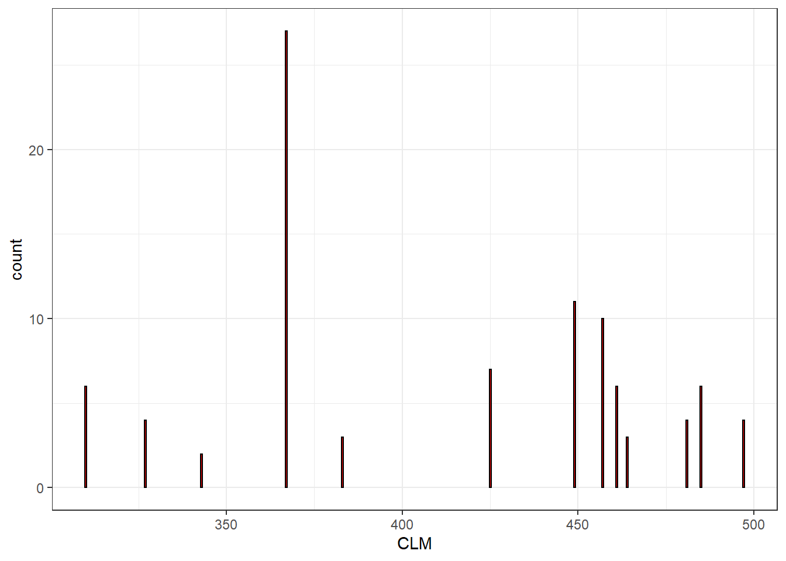
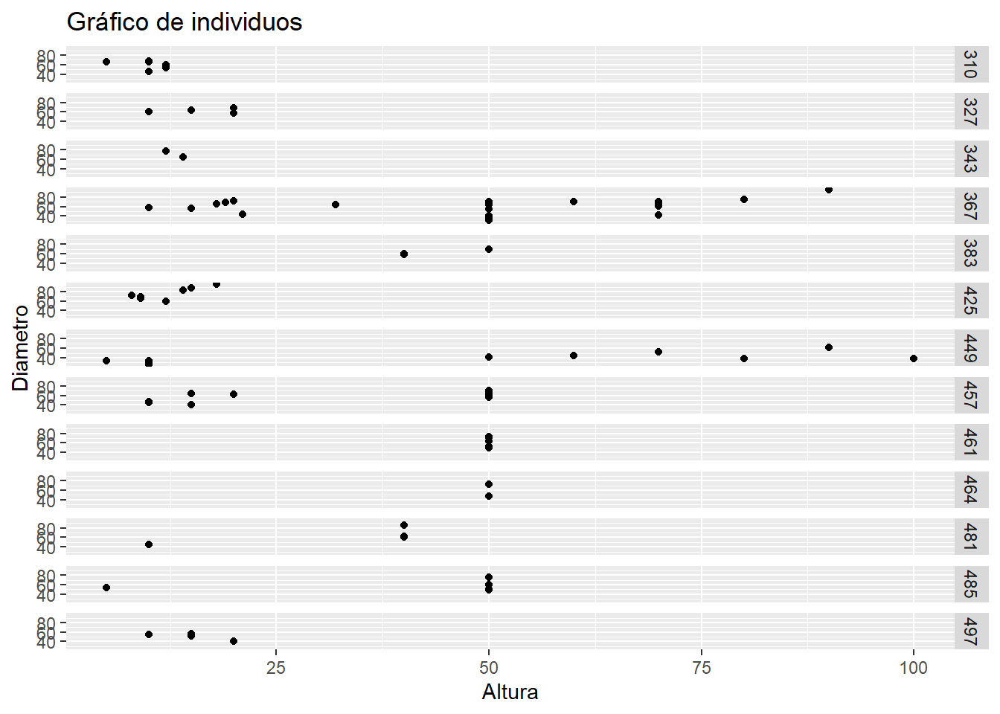

2 Introducción al lenguaje R
2.1 Introducción al lenguaje R
2.1.1 ¿Que es R?
R o The R Project for Statistical Computing (R Core Team 2020) es un lenguaje y entorno de programación de alto nivel, orientado a objetos y fundamentalmente centrado al análisis estadístico y gráfico, distribuido bajo la licencia GNU GPL y está disponible para los sistemas operativos Windows, Macintosh, Unix y GNU/Linux.
El origen de R se remonta a 1993 cuando Robert Gentleman y Ross Ihaka del Departamento de Estadística de la Universidad de Auckland adaptan el lenguaje de programación S, propio de los famosos Bell Laboratories de AT&T, el cual es un sistema para el análisis de datos desarrollado por John Chambers y Rick Becker fundamentalmente y usado desde finales de 1970 (Ross y Robert comienzan a llamar “R” al lenguaje que implementaron, por las iniciales de sus nombres). Es más, muchos de los libros y manuales sobre S son útiles para R.
2.1.2 ¿Por qué usar R?
R tiene varias ventajas respecto a otros lenguajes de programación de fines estadísticos o softwares dedicados. Entre otras podemos citar:
- Sus posibilidades gráficas son excelentes y muy versátiles. Esto llega hasta el punto de que muchos que R tiene dos aspectos: el de software, vamos a llamarlo, analítico y el gráfico, pudiendo incluso independizarse su aprendizaje.
- Cuenta con una elevada flexibilidad. Los trabajos más sencillos o complejos algoritmos pueden ejecutarse escribiéndose una palabra.
- No es “una caja negra” y en todo momento sabemos que estamos haciendo. Este es un aspecto que no se valora como se debería cuando hacemos nuestros análisis estadísticos: a costa de la facilidad de hacer todo con un par de clicks perdemos fácilmente el control de lo que estamos haciendo (o incluso llegamos a desconocerlo), algo que no debería ser permitido, ya que quien hace un análisis busca una conclusión y no saber cómo se obtiene debería invalidar por si solo dicha conclusión.
- En R, un análisis estadístico se realiza por pasos que arrojan resultados que se van almacenando en objetos. De esta forma, estos pueden recuperarse y usarse en cualquier momento.
- Al contrario que otros software, permite salidas mínimas de resultados, fácilmente legibles y analizables, y no una salida copiosa de datos y gráficos.
- Salvo que utilicemos una GUI, su aspecto es minimalista y espartano a conciencia (hasta su web sigue esta filosofía), siguiendo la filosofía de no perder el foco de atención de lo que estamos haciendo con el “marco” en el que lo hacemos.
- Es libre, con filosofía y objetivos del proyecto GNU, con lo que podemos acceder al código escrito por otros usuarios y modificarlo libremente y evidentemente, podemos programar nuestras propios procedimientos y aplicaciones.
- Es un proyecto vivo con dos millones de usuarios. Seguramente a nuestro problema ya se habrá enfrentado alguien y casi con total seguridad no deberemos avanzar más de “tres páginas de Google” para encontrar la solución.
- Existen multitud de librerías (paquetes) programadas por los usuarios de todo el mundo para llevar a cabo procedimientos específicos (¡más de 10.000!).
- Y si con todo ello, no tenemos suficiente, es totalmente gratuito, tanto el como todo su ecosistema.
2.1.3 Recursos sobre R
Para aprender sobre R y estar al corriente de las últimas novedades existen una serie de recursos que deberemos añadir a nuestros Favoritos. Entre otros:
- Página oficial de R: https://www.r-project.org/
- Fundación R: https://www.r-project.org/foundation/
- Manuales iniciales: https://cran.r-project.org/manuals.html
- Revista R: https://journal.r-project.org/
- R-Bloggers: http://www.r-bloggers.com/
- Comunidad R-Hispano: http://r-es.org/Comunidad
- Recursos MOOC como Coursera: www.coursera.org
- Bibliografía en papel: “R for Everyone: Advanced Analytics and Graphics” (http://www.jaredlander.com/r-for-everyone/), “R Cookbook” (http://shop.oreilly.com/product/9780596809164.do) y el clásico “Modern Applied Statistics with S” (http://www.springer.com/us/book/9780387954578)
En este punto nos puede asaltar la duda ¿Markdowncubre todo el espectro
que cubre HTML? Sí y no, porque si no lo cubre, tan solo tienes que
escribir la parte de HTML` separado una línea del siguiente párrafo en
Markdown.
Trabajar con Markdown, tiene infinidad de ventajas, pero es
especialmente adecuado para aquellas personas que publican contenido en
la web de manera regular. Entre otras ventajas cabe citar que cuando te
acostumbras a la sintaxis la generación de texto es extremadamente
rápido, es muy sencillo de leer, no tendremos el problema de errores por
no cerrar adecuadamente las etiquetas HTML y su compilación con
software como Pandoc permite la exportación
simple a infinidad de formatos basados en texto.
2.2 Instalación de R, RStudio y librerias
2.2.1 Instalación de R
R funciona bajo Windows, Linux, Mac o Solaris. Para instalar R accederemos a su página (en este caso, un mirror de España): http://cran.es.r-project.org/ y descargaremos la versión adecuada a nuestro sistema operativo.
En el caso de Windows, la instalación es muy sencilla y solo deberemos seguir los pasos que se nos indica. Si todo ha ido correctamente, cuando pulsemos sobre el icono de R, se abrirá su espartana interfaz en la que, además de la barra de herramientas, destaca la consola donde escribiremos y ejecutaremos nuestro código.
Algo bastante interesante de R es su portabilidad. R, una vez instalado en un PC puede funcionar de forma autónoma al mismo. Por ello, una simple copia del directorio donde lo hayamos instalado y su posterior “pegado” en una memoria flash, nos permitirá ejecutarlo en cualquier lugar, llevándonos así nuestra configuración personal, paquetes, entornos y demás.
2.3 Actualización de R
Cada cierto tiempo es recomendable realizar la actualización de R. Generalmente, un par de veces al año, el sistema es actualizado, misión que lleva a cabo un reducido grupo de especialistas (conocido como el R Core team) y los paquetes (que en próximos capítulos explicaremos) se adaptan a la nueva actualización, dejando, algunas veces de ser útiles en las versiones obsoletas.
La actualización de R puede ser automatizada o realizarse de forma manual si bien este último recurso no es la mejor opción debido a que se actualizará creando una nueva instalación manteniendo la anterior. Este echo se debe a que en la actualidad es la única forma de que no perdamos nuestras configuraciones y, sobre todo, la posible incompatibilidad con alguno de los paquetes que tengamos instalados.Para realizar una actualización automática del sistema, podemos usar la siguiente sentencia usando el paquete (Galili 2021) (despues veremos el lugar de ejecutarla):
if(!require(installr)) {
install.packages("installr"); require(installr)}
updateR()2.3.1 El Sistema R
Una vez instalamos R, nos encontramos con una interfaz gráfica de usuario que nos puede resultar “anticuada” sobre todo si trabajamos con los sistemas operativos más recientes. Este aspecto no debe confundirnos de cuál es la visión del sistema R: un lenguaje de programación con una clara vocación estadístico-matemática.

R
2.4 Gestión de directorios, archivos y versiones
2.4.1 Gestión de directorios
Existen dos comandos básicos para trabajar con directorios: setwd() y
getwd(). El primero, fija el directorio de trabajo que deseamos y el
segundo lo llama.
Con el directorio fijado, podremos movernos por él, usando el comando
"./data" que nos haría descender a una carpeta llamada data que cuelga
de nuestro directorio raíz fijado con setwd(). Por otro lado, si
usamos el comando "../data" ascenderemos a una carpeta que esta en un
nivel superior a nuestro directorio raíz.
A continuación, podemos usar los comandos list.files() y list.dirs()
para poder listar los archivos y directorios respectivamente que
tengamos en el directorios elegido. Es interesante indicar que si
añadimos la opción recursive=TRUE los dos comandos listaran todos los
ficheros y archivos que haya tanto en nuestro directorio raiz como en
todos los inferiores. Finalmente, usando el comando full.names = TRUE
en vez de solo mostrarnos el nombre completo del fichero, nos mostrará
toda su ruta.
Ahora combinemos todo lo anterior para listar los ficheros de un directorio:
list.files("c:/")
list.dirs("c:/")Finalmente, con el comando pattern = podremos seleccionar determinados
ficheros o directorios que coincidan con una determinada condición. Por
ejemplo, pattern = "(.*).jp2$" nos mostrará todos los ficheros que
finalicen la extensión jp2 y pattern = "29SMD(.*)SCL_20(.*).jp2$"
nos listará todos los ficheros que además de finalizar con jp2incluyan
la cadena 29SMD y SCL_20.
Una vez tenemos claro los conceptos anteriores, podremos realizar trabajos recursivos con nuestros ficheros y directorios (tranquilo, comprenderás este código a lo largo de estos apuntes), por ejemplo:
List <- list.files(getwd(), full.names = TRUE,
pattern = "29SMD(.*)SCL_20(.*).jp2$",
recursive=TRUE)
for (file in List) {
out_file <- extension(file, 'tif')
gdal_translate(src_dataset = file, dst_dataset = out_file,
ot = "UInt16", of = "GTiff")
} 2.4.2 Manejo de archivos
Cuando cargamos un fichero externo, sea del formato que sea, R, por
defecto lo interpretará como un data.frame (ver ??), si
este viene en un formato usual de tabla.
R puede cargar multitud de ficheros distintos y si no lo hace con las opciones incluidas en ´{base}´ lo hará a traves de librerias. Veamos a continuación los más frecuentes.
2.4.2.1 Ficheros csv
Los ficheros delimitados por comas se cargan con el comando read.csv
indicando al menos la ruta del mismo, si viene o no con cabeceras, el
separador decimal y el separador de colummas:
datos<-read.csv("./datos.csv", header=TRUE, dec= ".", sep=",")En el caso de no indicar, header, dec y/o sep, el comando
read.csv importará el fichero con el primer registro como cabeceras,
el separador decimal en forma de . y el separador de columnas ,.
En ocasiones, nuestro fichero puede venir sin cabeceras por lo que deberemos importarlo indicando este echo y R se encargará de crearlas y nombrarlas automaticamente:
datos<-read.csv("./datos2.csv", header=FALSE, dec= ".")En este último caso, si deseamos que en vez de los nombres de cabecera que crea R, tener unos personalizados, deberemos decírselo al realizar la importación:
datos<-read.csv("./datos2.csv", header=FALSE,
dec= ".", col.names = c("id", "factor", "volumen"))Para finalizar, nuestros ficheros pueden venir con valores nulos. Si los
conocemos, deberemos indicarselo al comando read.csv mediante
strings.na. Por ejemplo (todos los valores que en el fichero vengan
con N/A los entederá como un valor nulo):
datos<-read.csv("./datos3.csv", header=TRUE, strings.na= "N/A")Un añadido: en ocasiones los ficheros comienzan con líneas explicativas
que no sirven para nada en el contexto de datos tabulares. Para saltar
estas lineas podemos usar el comando skip= dentro de read.csv().
2.4.3 Carga de datos usando el buscador
En ocasiones, sobre todo si nuestro código lo compartimos con otros, es
conveniente dejar la forma de entrada de nuestros datos a libre elección
y que se localicen con el buscador del sistema. Para ello, haremos uso
de la función file.choose():
filename <- file.choose()
data <- read.csv(filename, header=TRUE, dec= ".", sep=",")2.4.3.1 Carga de datos desde una ruta web
Generalmente nuestros ficheros estarán alojados en nuestro PC, pero en
la actualidad, cada vez es más frecuente que los mismos estén alojados
en un servidor de la web. La carga de estos no difiere en nada de la
carga de un fichero ubicado en nuestro local. Para ello, en vez de una
ruta de carpetas de nuestra computadora, pondremos la url donde se aloje
el fichero y nos ayudaremos de la librería RCurl (Temple Lang 2021a) que
facilita el trabajo de lectura y descarga:
library(RCurl)
datos_online <- read.csv(
text=getURL("https://raw.githubusercontent.com/juliomsevilla/rlidar/main/data/parc.csv"),
header=TRUE)En ocasiones la librería RCurl (Temple Lang 2021a) falla (en Windows
especialmente y/o si estamos antes de un proxy), por lo que podemos
optar a la opción sencilla de descargar el fichero directamente:
download.file("https://raw.githubusercontent.com/juliomsevilla/rlidar/main/data/parc.csv",
destfile = "c:/temp/test.csv", method = "curl")2.4.3.2 Scrapping
Una rutina bastante usual es descargar datos desde una web (a diferencia
del anterior, no es un fichero alojado en una servidor). A este
procedimiento se le denomina scrapping y usualmente deberemos
comprender ficheros del tipo xmlo json (comprender, ya que no son
estructuras rígidas como puede ser una “tabla” de un csv).
En el caso de xml nos apoyaremos en la libreria XML (Temple Lang 2021b) el
procedimiento consistirá en cargar la ruta en la que se aloja dicho
elemento y a continuación indicarle a R cual es el nodo raíz para
finalmente ver que datos hay encerrados entre las etiquetas <>.
library(XML)
library(RCurl)
url<-getURL("https://raw.githubusercontent.com/juliomsevilla/rlidar/main/data/test.xml")
xmldoc<-xmlParse(url)
rootnode<-xmlRoot(xmldoc)
rootnode[1] #De esta forma podremos ver el registro número 1
datos_raw<-xmlSApply(rootnode, function(x) xmlSApply(x, xmlValue)) #Carga los datos fila a fila
datos<-data.frame(t(datos_raw), row.names =NULL) #Hacemos una transposición para aplicar correctamente las etiquetas como cabecerasComo sabemos HTML no deja de ser una formulación especial de xml y,
por tanto, podremos usar lo anterior para extraer información de una
web, web, hecha con lenguaje HTML
url<-getURL("https://raw.githubusercontent.com/juliomsevilla/rlidar/main/data/poblacion.html")
tables<-readHTMLTable(url) #Nos extrae todas las tablas que hay en el fichero HTML
tabla1<-tables[[3]] #Extraerá la tabla 6 y se usan dos corchetes porque se busca en una lista de listas
tabla2<-readHTMLTable(url, which=3) #Idem al anterior pero no cargamos en local toda la web, ahorrando memoriaAhora hablemos de los ficheros json ficheros mucho más comunes para
compartir datos y más eficientes en este sentido que xml. la librería
que nos facilita el trabajo es jsonlite (Ooms 2020)
library(jsonlite)
library(RCurl)
url<-"https://raw.githubusercontent.com/juliomsevilla/rlidar/main/data/currencies.json"
currencies<-fromJSON(url)Si analizamos la estructura del fichero jsonveremos que como en el
caso de xmles un conjunto de tados anidadados en etiquetas. Para poder
extraer solo lo que nos interesa, podemos hacer uso del simbolo $ y
crearnos un solo objeto con los datos que nos interese (es bastante util
ir recorriendo la estructura según nos propone el predictor de RStudio
a medida que vamos poniendo el símbolo $)
datos<-currencies$list$resources$resource$fields2.4.3.3 El fichero Rdata
R por defecto trabaja con un sistema de archivos propio, denominado
con la extensión *.Rdata. Estos ficheros conservará todos los
elementos tal y como los tengamos en la memoria una vez lo creemos, por
lo que resultan bastante útiles para compartir ciertos elementos de
nuestras sesiones que hayamos trabajado.
cliente<-c("Pepe", "Juan", "Julio")
fecha<-as.Date(c("2018/1/14", "2018/12/26", "2018/11/15"))
cantidad<-c(11.1, 16.18, 26.25)
datos<-data.frame(cliente, fecha, cantidad)
save(datos, currencies, file = "c:/Borrar/clientes.Rdata")
load("c:/Borrar/clientes.Rdata")Existe otro formato de fichero en R, denominado rds que difiere del
anterior en que este no almacena el nombre del objeto, por lo que cuando
lo carguemos deberemos asignarle el nombre que queramos tener en nuestra
sesión y, y esto es lo más importante, solo es capaz de guardar un solo
objeto. Para guardar o cargar este fichero, usaremos los comandos
loadRDS y saveRDS (en este último caso, guardando con la extensión
*.rds).
Finalmente, dentro de R podemos usar un comando muy interesante:
save.image(file="") el cual nos permite guardar en un fichero Rdata
toda nuestra sesión, permitiéndonos así hacer portable nuestro trabajo.
2.4.4 Limpieza de la memoria en R
A medida que vayamos trabajando en nuestro análisis, la memoria del
sistema se irá llenando pudiendo llegar a abortar la sesión (depende la
memoria RAM de nuestra computadora). Por ello, es recomendable ir
eliminando aquellos objetos que no vayamos a utilizar nuevamente con el
comando rm:
rm(datos, tabla1) #Elimina el objeto datos y tabla1
rm(list=setdiff(ls(), c("cantidad", "cliente"))) #Elimina todos los objetos de la memoria menos
rm(list=ls()) #Elimina todos los elementos de la memoria
.rs.restartR() #Reinicia la sesión de R, eliminando cualquier resto que pudiera quedar2.4.5 Control de versiones
Para comenzar necesitaremos contar con el software Git en nuestro pc. Podemos hacerlo de dos formas: descargandolo e instalando la versión de nuestro sistema operativo o usando una versión portable. Desde aquí recomendamos https://www.syntevo.com/smartgit/download/, bien para usarlo o solo para utilizar el git portable.
Una vez lo descomprimes vamos a RStudio y en Tools>Global Options>Git/SVN se le indica donde está git.exe, que está dentro de la instalación de git portable en la carpeta bin (generalmente en /git/bin/git.exe).
A continuación abrimos el shell de git (/git/git-cmd.exe) y pondremos los siguientes comandos sustituyendo con nuestros datos lo que viene dentro de las comillas.
git config --global user.name 'Your Name'
git config --global user.email 'your@email.com'
Crear un proyecto control de versiones es muy sencillo: creamos el proyecto habilitando el sistema de versioneado (checkbox “Create a git repository” dentro de File>New Directory>New Project). Para clonar un repositorio creamos un nuevo proyecto y le decimos que este sea con control de versiones (File>Version Control) y ahí podremos introducir la dirección http del repositorio. También tendremos que indicarle donde lo guardaremos. Despues de ello, RStudio añadirá un botón, en la barra de herramientas principal, para gestionar el control de versiones (simbolizado con las letras GIT).
Trabajar con un sistema de control de versiones daría para un libro completo sobre el tema por lo que no vamos a profundizar. Básicamente, nuestro trabajo se basará en realizar commits cada vez que deseemos fijar una foto de nuestros cambios y ejecutar pull/push de nuestros repositorios cuando queramos traernos los cambios a local o subirlos al servidor respectivamente. Indicar que en estas dos acciones, se abrirá un diálogo que nos solicita nuestro usuario y contraseña. Para profundizar en el tema es muy recomendable visitar el manual de Jenny Bryan Happy Git and GitHub for the useR y el video oficial de RStudio dentro de la serie RStudio Essentials
2.4.6 Buenas prácticas en la gestión de un proyecto
Con frecuencia nos veremos envueltos en la gestión de proyectos de envergadura donde se mezclarán ficheros de datos creados y externos, scripts, elementos de consulta, documentación e incluso información temporal. Por ello, es recomendable ser disciplinado y crear una estructura de directorios adecuada.
A continuación se dan unas ideas, adecuables a cada situación:
Tratar los datos originales como de sólo lectura
Limpiar los datos previamente, incluso fuera de R
Usar herramientas de control de versiones como
GitoSVNEmpezar siempre nuestra sesión definiendo el directorio de trabajo y que este sea fijo
Siempre trabajar con la misma estructura de directorios, aunque tengamos carpetas vacias. Por ejemplo, dentro de del directorio raíz de nuestro proyecto (cada proyecto contará con uno), crear las siguientes carpetas:
- bin: para guardar todos aquellos elementos accesorios para poder realizar los análisis (scripts de otros lenguajes, por ejemplo)
- data: donde almacenaremos todos los datos de inicio, metadata,…
- doc: para poder guardar toda la documentación generada como wikis o manuales
- results: para guardar los datos limpios de nuestro análisis y los resultados
- src: para almacenaje de scripts creados
- temp: para almacenar los archivos temporales y prescindibles
Escribir código legible y que este sea lo más pequeño posible (“un elefante nos lo podemos comer a pequeños bocados”)
Siempre documentar tu proyecto, hasta lo más simple
2.5 Manejo de objetos en R
2.5.1 R como calculadora
R es una potente calculadora pero quizás sea para lo que menos se usa. Su utilización es tan simple como escribir lo que queremos realizar (hagamos nuestro “Hello, World” sumando 1+1:
1+1## [1] 22.5.2 Manejo de variables
Las variables, entendidas en R como en cualquier lenguaje de
programación, son el núcleo sobre el que gira todo el sistema, si bien
en este sistema se denominan objetos. Estas se asignan con los
operadores <- o = y con la función assing(), prefieriéndose el
primero.
a<-1
a
b=2
b
c<-d<-3
c
d
assign("e", 13)
e
3->f
fTodas los objetos en R se realizan con objetos que son guardados en la memoria activa del ordenador, sin usar archivos temporales, por lo que deberemos tener muy en cuenta la RAM de nuestra máquina.
Es importante destacar que si un objeto existe con una valor, si le asignamos otros, el primero cambia irremediablente:
a
a<-45
aPor otro lado, el valor asignado a un objeto puede ser el resultado de una operacion y/o de una función:
n <- 5 + rnorm(1)En ocasiones, y para abreviar, podremos encontrarnos con comandos en una
sola línea: si estos están separados con ; se ejecutarán de forma
independiente:
a<-1; b<-2; a; b## [1] 1## [1] 2A veces podremos querer listar los objetos que existen en memoria, para
lo cual usaremos ls():
ls()## [1] "a" "b"ls(pat = "m") # Lista aquellos objetos que contengan una m## character(0)2.6 Manejo de datos en R
2.6.1 Tipos de datos
El dato en R es un concepto distinto al que estamos acostumbrados a tratar en Estadística Aplicada y se debe entender como el resultado de ejecutar una determinada expresión, es decir, es un objeto.
En otros, los tipos de datos (objetos) fundamentales de R son:
- Vectores. Conjunto de elementos en un determinado orden.
- Factores. Vector donde sus elementos provienen de un número finito de categorías.
- Matrices. Estructura de datos bidimensional de valores de igual tipo
- Listas. Estructura de datos más amplia que y puede contener colecciones arbitrarias de datos
- data.frame. Estructura de datos bidimensional de elementos, cuyas columnas pueden estar formadas por elementos de distinto tipo
Como vemos unos se diferencian de otros en función de los tipos de elementos que contienen. Estos elementos poseen distintos atributos, pero de ellos, para nuestros propósitos hemos de destacar el modo. En concreto, en R, distinguimos cuatro modos:
- Lógico o modo binario, verdadero o falso (T o F, respectivamente)
- Númerico, donde los valores posibles son números reales
- Complejo, donde los valores posibles son números complejos
- Carácter, donde los valores son caracteres (separados por comillas)
- Fechas, definidas en formato “2015-06-25” o “2015-06-25 15:15”
2.6.1.1 Vectores
Es uno de los tipos de datos más utilizados. Como regla ineludible es que sus elementos sean del mismo modo.
Su creación se realiza a través de la función c (del inglés
concatenate), siguiendo la siguiente estructura:
x<-c(118, 160, 64, 138, 168, 140, 109, 135, 220, 180, 151, 129, 117, 121, 86, 170, 62, 104, 184)
z<-c("a", "a", "b", "c", "a", "c", "b", "a", "c", "b", "c", "c", "b", "b", "a", "a", "a", "b", "c")
w<-c(5:-7)
w## [1] 5 4 3 2 1 0 -1 -2 -3 -4 -5 -6 -7El trabajo con objetos de R tiene grandes ventajas. Una de ellas es el crear datos a partir de otros o ejecutar operaciones con ellos.
x1<-c(118, 160, 64, 138, 168)
x2<-c(140, 109, 135, 220, 180)
x3<-c(x1, 140, 109, 135, 220, 180, 151, 129, 117, 121, 86, 170, 62, 104, 184)
x1*x2## [1] 16520 17440 8640 30360 30240(x1^2)/(x2)## [1] 99.45714 234.86239 30.34074 86.56364 156.80000Si, deseamos saber las características del vector creado, podemos usar funciones como las siguientes:
mode(x)## [1] "numeric"length(x)## [1] 19Otras funciones útiles son las que se enumeran a continuación:
is.numeric(x) #Pregunta si es numérico## [1] TRUEclass(x) #Indica el tipo de valor## [1] "numeric"nchar(z) # Cuenta el número de caracteres## [1] 1 1 1 1 1 1 1 1 1 1 1 1 1 1 1 1 1 1 12.6.1.2 Factores
Los factores son uno de los tipos de datos más importantes en Estadística Aplicada. Su definición en R es muy sencilla y se hace con la instrucción siguiente (nos apoyaremos en el vector z, anteriormente creado):
f<-as.factor(z)Existen comandos asociados a los factores bastante útiles. De ellos
destaca levels, que nos indica los niveles del factor:
levels(f)## [1] "a" "b" "c"2.6.2 Valores perdidos y nulos
El tratamiento de estos tipos de valores es muy simple en R. Los valores
perdidos se definen como NA y a diferencia de un valor nulo,NULL,
implica la existencia de valor. Esto se puede ver fácilmente con el
siguiente comando:
s<-c(1, NA, 3, 4)
r<-c(1, NULL, 3, 4)
s## [1] 1 NA 3 4r## [1] 1 3 4length(s)## [1] 4length(r)## [1] 3Si contamos con valores perdidos, es de vital importancia no tratarlos
en nuestros análisis. Para ello, usaremos el comando na.rm=T:
mean(s)## [1] NAmean(s, na.rm=T)## [1] 2.666667Para finalizar, en R, hemos de evitar confundir NA con NaN. Mientras
el primero, como hemops indicado responde a la inexitencia de valor, el
segundo representa las siglas “Not a Number,” siendo arrojado por el
porgrama cuando el resultado de un determinado cálculo así lo sea.
sqrt(-23)## Warning in sqrt(-23): Se han producido NaNs## [1] NaN0/0## [1] NaN2.6.2.1 Gestión de valores NA
Cuando cargamos un fichero de datos que contiene datos vacios, podremos
transformarlos a NA usando el comando na.strings="" poniendo dentro
de las comillas el valor que represente ese dato vacio (si efectivamente
el vacio lo es, lo podremos indicar no poniendo nada dentro de estas
comillas).
download.file("https://raw.githubusercontent.com/juliomsevilla/rlidar/main/data/parcna.txt",
destfile = paste(tempdir(), "\\parcna.txt", sep=""),
method = "curl", overwrite=TRUE)
data <- read.table(paste(tempdir(), "\\parcna.txt", sep=""), na.strings="na", header=TRUE)En ocasiones podríamos querer despreciar esos casos que contienen
valores NA: lo haremos facilmente con la sentencia na.omit().
data_clean<-na.omit(data) #Observemos que se ha reducido el número de registros respecto al objeto dataHagamos algo más complejo: quedemosnos con aquellos registros donde no
existan NA en un determinado campo myfield (usaremos ! que es el
indicador de negación, el concepto is.na y los corchetes para
señalizar filas y/o columnas).
new_data<-data[!is.na(data$COMARCA),]Parecido a lo anterior, si quisieramos quedarnos solo con los registros
completos, es decir, con solo aquellos que no tienen NAen ninguna
columna, podríamos hacer:
new_data.2<-data[complete.cases(data),]Finalmente, si quisieramos convertir un determinado valor a NA
podríamos ejecutar:
data$AB[data$HD==0]<-NA2.6.2.1.1 Reemplazar valores NA con parámetros de la muestra
Como se ha dicho anteriormente, al calcular parámetros de nuestra
muestra y contar con valores NA el resultado será NA salvo que le
indiquemos que no lo tenga en cuenta con na.rm. De esta forma,
evitaremos el error, pero, por contra, perderemos registros de nuestro
data.frame si este cuenta con más.
Por ello, en ocasiones es adecuado reemplazar esos valores con el parámetro que estemos calculando:
data$NC<-ifelse(is.na(data$NC),
mean(data$NC, na.rm = TRUE),
data$NC)Esta opción es adecuada para variables continuas. En el caso de variables categóricas, podemos asignar un valor aleatorio, de todos los posibles con los que contamos en ese caso.
rand.impute<-function(x){ # x es un vector de datos que puede contener NA
missing<-is.na(x) # missing es un vector que contiene TRUE o FALSE en función de que x sea NA o no
n.missing<-sum(missing) #sumamos missing y obtenemos el número de verdaderos y por tanto obtenemos cuantos NA tenemos
x.obs<-x[!missing] # Obtenemos que datos tienen valor diferente de NA en x, es decir, me quedo con los que no son NA
imputed<-x
imputed[missing]<-sample(x.obs, n.missing, replace = TRUE) #Extraemos una muestra aleatoria de los datos que conocemos, x.obs, de un tamaño n.missing, y los asignamos a los que no conocemos
return (imputed)
}
random.impute.dataframe<- function(dataframe, cols) {
names<-names(dataframe)
for (col in cols){
name<-paste(names[col], ".imputed", sep="")
dataframe[name]=rand.impute(dataframe[,col])
}
}
data2<-data
random.impute.dataframe(data2,c(1,3))2.6.2.1.2 Eliminar registros NA
Las más de las veces, querremos eliminar los datos NA. Para ello,
haremos uso del comando na.omit:
data_na.omit<-na.omit(data)2.6.3 Registros duplicados
La gestión de los registros duplicados es muy sencilla en R con la
función unique()
data2<-unique(data)2.6.4 Reescalado
Para que funcionen mejor muchos algoritmos, hay que normalizar las
variables de entrada al algoritmo. Por Normalizar conocemos la técnica
que nos permite comprimir o extender los valores de la variable para que
estén en un rango definido. Asímismo, es bastante interesante usar esta
técnica con variables con dispersiones muy grandes (es decir con valores
muy elevados y muy pequeños). El trabajo de normalización se puede
realizar facilmente con la libreria scales (Wickham and Seidel 2020)
library(scales)
data$VSC.rescaled<-rescale(data$VSC)
#El valor más pequeño tomará el valor cero y el más alto tomará el valor uno. El resto se escala de forma líneal:
data$VSC.rescaled.manual<-(data$VSC-min(data$VSC))/(max(data$VSC)-min(data$VSC))
data$VSC.rescaled.100<-rescale(data$VSC, to=c(0,100)) En el caso que quisieramos reescalar varias columnas, podríamos hacer uso de un bucle:
rescale.all<-function(dataframe, cols){
names<-names(dataframe)
for (col in cols){
name<-paste(names[col], "rescaled", sep=".")
dataframe[name]<-rescale(dataframe[,col])
}
dataframe
}
data2<-data
data2<-rescale.all(data2, c(4,5))2.6.5 Normalizado y estandarizado
Las más de las veces realizamos pruebas, modelos o simplemente estimamos valores de parámetros en los que es obligatoria la existencia de normalidad en nuestros datos. Se entiende por variable normal aquella cuya distribución de probabilidad se ajusta una curva acampanada en la que la media aritmética, la mediana y la moda de la distribución son iguales y se localizan en el pico. Así, la mitad del área bajo la curva se encuentra a la derecha de este punto central y la otra mitad está a la izquierda de dicho punto.
No es la única función de distribución, pero si es la más común y una de sus características más importantes es que casi cualquier distribución de probabilidad, tanto discreta como continua, se puede aproximar por una normal bajo ciertas condiciones. Por ello, la mayoría de los estdísticos más rutinarios exigen la existencia de normalidad para validar las hipótesis.
El análisis de la normalidad se puede hacer de una forma rudimentaria comprobando si la media, mediana y moda son “iguales” o de una forma más compleja a raíz de pruebas de hipótesis como la de Kolmogorov-Smirnov o el test de Shapiro. Asimismo, gráficamente, representando el histograma de frecuencias o con gráficos de cajas (box-plot) podremos comprobar su cumplimiento.
En R, estas pruebas forman parte del núcleo del software, usándose los siguientes comandos para comprobarla:
mean(data$VSC) # Media aritmética## [1] 30.66169median(data$VSC) # Mediana## [1] 27.895shapiro.test(data$VSC) #Test de Shapiro (para pruebas con más de 50 datos)##
## Shapiro-Wilk normality test
##
## data: data$VSC
## W = 0.93232, p-value = 3.935e-16ks.test(data$VSC, "pnorm", mean(data$VSC), sd(data$VSC)) # Test de Kolmogorov## Warning in ks.test(data$VSC, "pnorm", mean(data$VSC), sd(data$VSC)): ties should
## not be present for the Kolmogorov-Smirnov test##
## One-sample Kolmogorov-Smirnov test
##
## data: data$VSC
## D = 0.066132, p-value = 0.008827
## alternative hypothesis: two-sidedpar(mfrow=c(2,2)) # Representación gráfica
plot(data$VSC)
hist(data$VSC)
boxplot(data$VSC)
qqnorm(data$VSC)
par(mfrow=c(1,1)) Muchas veces la no existencia de normalidad puede ser solucionada con una transformación de los datos. La transformación consiste en aplicar una determinada operación matemática, de forma que una vez aplicada la variable alcance cierto grado de normalidad. En general con variables cuya distribución esté sesgada a la izquierda, la normalidad se puede alcanzar con aplicando el logaritmo neperiano de la misma (así comprimiremos la cola de la izquierda y extenderemos la de la derecha.). Si, por el contrario, la distribución está sesgada a la derecha, la aplicación de una raíz cuadrada puede solucionar el problema.
Otras veces, el alcanzar la normalidad no es tan sencillo y es necesario
utilizar transformación en las que entran en juego potencias. En este
sentido destaca la conocida tranformación planteada por Box y Cox. En R
su consecución se realiza a partir de la aplicación de librería car
(Fox, Weisberg, and Price 2021)
library(car)
summary(powerTransform(data$VSC))## bcPower Transformation to Normality
## Est Power Rounded Pwr Wald Lwr Bnd Wald Upr Bnd
## data$VSC 0.4838 0.5 0.4059 0.5616
##
## Likelihood ratio test that transformation parameter is equal to 0
## (log transformation)
## LRT df pval
## LR test, lambda = (0) 177.8797 1 < 2.22e-16
##
## Likelihood ratio test that no transformation is needed
## LRT df pval
## LR test, lambda = (1) 144.6436 1 < 2.22e-16La variable transformada será (-1+datos^"Est.Power")/("Est.Power"):
data$VSC.transform<-(-1+data$VSC^0.4838)/(0.4838)
par(mfrow=c(2,2)) # Representación gráfica
plot(data$VSC.transform)
hist(data$VSC.transform)
boxplot(data$VSC.transform)
qqnorm(data$VSC.transform)par(mfrow=c(1,1)) Finalmente, en ocasiones nos interesará estandarizar (o tipificar)
nuestras variables, esto es, que nuestra variable se convierta en otra
con una distribución de media cero y desviación típica 1. Esto se
consigue facilmente con el comando scale().
data$VSC.tip<-scale(data$VSC)
mean(data$VSC.tip)## [1] 8.456093e-17sd(data$VSC.tip)## [1] 12.6.6 Categorizar los datos
Muchas veces nos interesará categorizar los datos en rangos en función a
un valor numérico. Para ellos, haremos uso de la función cut:
cortes.num<-c(-Inf, 16, 25, 40, Inf)
cortes.label<-c("bajo", "medio", "alto", "muy alto")
data$VSC.cat<-cut(data$VSC, breaks = cortes.num, labels = cortes.label)Siguiendo con lo anterior, al realizar ciertos análisis como los de regresión, la variable dependiente y las independientes no solamente pueden estar dadas por variables cuantitativas: existen otros tipos de variables de carácter cualitativo. Dichas variables se conocen comúnmente como variables dummy y usualmente, dichas variables indican la presencia o ausencia de una cualidad o atributo, tomando valor de 1 en una submuestra y 0 en el resto de la muestra.
La gestión de este tipo de variables podemos hacerlo con la libreria
dummies (Brown 2012).
library(dummies)
data.dummy<-dummy.data.frame(data, sep=".")
head(data.dummy)## COMARCA.ANDEVALO COMARCA.COSTA COMARCA.SIERRA COMARCA.NA NC HD AB
## 1 0 1 0 0 683.33 16.82 8.00
## 2 0 1 0 0 800.00 16.15 6.35
## 3 0 1 0 0 800.00 16.15 6.35
## 4 0 1 0 0 800.00 16.15 6.35
## 5 0 1 0 0 650.00 18.48 9.33
## 6 0 1 0 0 750.00 16.70 9.23
## VSC VSC.rescaled VSC.rescaled.manual VSC.rescaled.100 VSC.transform
## 1 41.85 0.2771390 0.2771390 27.71390 10.519687
## 2 30.75 0.2029412 0.2029412 20.29412 8.776134
## 3 30.75 0.2029412 0.2029412 20.29412 8.776134
## 4 30.75 0.2029412 0.2029412 20.29412 8.776134
## 5 53.77 0.3568182 0.3568182 35.68182 12.142223
## 6 49.64 0.3292112 0.3292112 32.92112 11.603315
## VSC.tip VSC.cat.bajo VSC.cat.medio VSC.cat.alto VSC.cat.muy alto
## 1 0.556328224 0 0 0 1
## 2 0.004390957 0 0 1 0
## 3 0.004390957 0 0 1 0
## 4 0.004390957 0 0 1 0
## 5 1.149039236 0 0 0 1
## 6 0.943678793 0 0 0 1data.dummy2<-dummy.data.frame(data, names=c("COMARCA"), sep=".") # Solo lo aplicamos a una o varias variables en vez de a todas las categóricas del data.frame
head(data.dummy2)## COMARCA.ANDEVALO COMARCA.COSTA COMARCA.SIERRA COMARCA.NA NC HD AB
## 1 0 1 0 0 683.33 16.82 8.00
## 2 0 1 0 0 800.00 16.15 6.35
## 3 0 1 0 0 800.00 16.15 6.35
## 4 0 1 0 0 800.00 16.15 6.35
## 5 0 1 0 0 650.00 18.48 9.33
## 6 0 1 0 0 750.00 16.70 9.23
## VSC VSC.rescaled VSC.rescaled.manual VSC.rescaled.100 VSC.transform
## 1 41.85 0.2771390 0.2771390 27.71390 10.519687
## 2 30.75 0.2029412 0.2029412 20.29412 8.776134
## 3 30.75 0.2029412 0.2029412 20.29412 8.776134
## 4 30.75 0.2029412 0.2029412 20.29412 8.776134
## 5 53.77 0.3568182 0.3568182 35.68182 12.142223
## 6 49.64 0.3292112 0.3292112 32.92112 11.603315
## VSC.tip VSC.cat
## 1 0.556328224 muy alto
## 2 0.004390957 alto
## 3 0.004390957 alto
## 4 0.004390957 alto
## 5 1.149039236 muy alto
## 6 0.943678793 muy altoFinalmente, la eliminación de un objeto se debe realizar con el comando
rm:
rm(a)2.7 Profundizando en el data.frame
2.7.1 Introducción
Las más de las veces nuestras estructuras de datos se enmarcarán dentro
de “tablas” clásicas y son necesiarias para la amplia mayoría de
análisis estadísticos.Estas tablas, en R, se denominan data.frame y,
lo más común es que partamos de una tabla con datos y con ella y sobre
ella ejecutemos nuestros análisis.
R, como tal, no dispone de un sistema visual para gestionar las tablas por lo que deberemos conocer los rudimentos para procesarlas y adaptarlas a nuestros requerimientos una vez las tengamos en la memoria despues de haberlas cargado tal y como se explicó en el capítulo ??.
2.7.2 Visualizar tablas
Generalmente comenzaremos visualizando nuestra tabla. Para ello, R
dispone, entre otros de los sigueintes comandos (comenzaremos cargando
el fichero iris):
iris
plot(iris) # hace una representación gráfica
summary(iris) #calcula los estadísticos descriptivos
head(iris) #extrae los 6 primeros registros
tail (iris) #extrae los 6 últimos registros
names(iris) # muestra las cabeceras de las columnas
dim(iris) # visualiza las dimensiones de filas y columnas de la tabla2.7.3 Extracción de datos en nuevos data.frame
Un recurso muy interesante de R es como extrae los datos del
data.frame. Veamos algunos ejemplos:
iris[1:10,] #extrae las 10 primeras filas
iris[,1:3] #extrae las 3 primeras columnas
iris[1:10,1:3] #extrae las 10 primeras filas y de las 3 primeras columnas
iris[c(2,5,8),] #extrae las filas 2, 5, y 8
iris[, c(1,3)] #extrae las columnas 1 y 3Por otro lado, si no conocemos el número de columna del campo que deseamos, siempre podremos, evidentemente, extraerlo con su nombre:
iris[, "Sepal.Width"]Finalmente, si deseamos extraer determinados elementos con expresiones lógicas, podremos hacerlo con un simple comando:
iris[iris$Species == "setosa",]2.7.4 Gestionar los data.frame
Si antes nos referiamos a la visualización y extracción de los
elementos, veamos ahora como se gestionan los data.frameen su
conjunto.
Para añadir una columna, lo haremos añadiendo una variable dentro de ella:
datos<-iris
datos$Petal.Area <- datos$Petal.Length * datos$Petal.Width
head (datos)## Sepal.Length Sepal.Width Petal.Length Petal.Width Species Petal.Area
## 1 5.1 3.5 1.4 0.2 setosa 0.28
## 2 4.9 3.0 1.4 0.2 setosa 0.28
## 3 4.7 3.2 1.3 0.2 setosa 0.26
## 4 4.6 3.1 1.5 0.2 setosa 0.30
## 5 5.0 3.6 1.4 0.2 setosa 0.28
## 6 5.4 3.9 1.7 0.4 setosa 0.68Y para eliminarlas, lo podremos hacer anulando la columna deseada:
datos$Petal.Area <- NULL
head (datos)## Sepal.Length Sepal.Width Petal.Length Petal.Width Species
## 1 5.1 3.5 1.4 0.2 setosa
## 2 4.9 3.0 1.4 0.2 setosa
## 3 4.7 3.2 1.3 0.2 setosa
## 4 4.6 3.1 1.5 0.2 setosa
## 5 5.0 3.6 1.4 0.2 setosa
## 6 5.4 3.9 1.7 0.4 setosaPor otro lado, podremos desear ordenar los datos de una determinada
manera.Para ello, haremos uso de order:
datos2 <- iris[order(iris$Sepal.Width),]2.7.5 La libreria dplyr
En este punto, si bien como se ha descrito en los puntos anteriors R, en
su versión base es bastante potente en la gestión de los data.frame,
es adecuado destacar el paquete dplyr (Wickham, François, et al. 2021)que entre otras cosas,
hace más natural la gramática de trabajo con las tablas.
La sintaxis grámatica de esta libreria facilita la gestión de los elementos ya que las peticiones y comandos se hacen con las palabras habituales en otros softwares, lo que nos descarga en gran medida de memorizar comandos recurrentes. Veamos algunos ejemplos:
library (dplyr)
datos<-iris
subset <- select(datos, Sepal.Width:Species) #extrae las columnas que van de Sepal.Width:Species
Petal.Length.5<- filter(datos, Petal.Length > 5) #extrae aquellas filas donde Petal.Length es mayor de cinco
Petal.Length.order <- arrange(datos, desc(Petal.Length)) #Extrae un nuevo data.frame ordenado por Petal.Length de forma descendente
Petal.Length.rename<-rename(iris, Long.Petalos=Petal.Length, Ancho.Petalos=Petal.Width) #Renombra determinadas columnas
iris.Petal.Area <- mutate(iris, Petal.Area = Petal.Width*Petal.Length) #Añade una nueva variable al data.frame
iris.aleat<-sample_n(iris, 4) #Extrae aleatoriamente cuatro registros
iris.aleat.025<- sample_frac(iris, 0.25, rep=TRUE) #Extrae un 25% de obs con reemplazamientoMención aparte requiere el operador %>%. Este permite concatenar
varias secuencias de comandos aliviando drásticamente nuestro código:
iris.2<- select(iris, contains('Petal'))
iris.3<- filter(iris.2, Petal.Length > 4)
iris.4<- arrange(iris.3, Petal.Length)
head(iris.4)## Petal.Length Petal.Width
## 1 4.1 1.0
## 2 4.1 1.3
## 3 4.1 1.3
## 4 4.2 1.5
## 5 4.2 1.3
## 6 4.2 1.2iris.5<-iris %>%
select(contains('Petal')) %>%
filter(Petal.Length > 4) %>%
arrange(Petal.Length)
head(iris.5)## Petal.Length Petal.Width
## 1 4.1 1.0
## 2 4.1 1.3
## 3 4.1 1.3
## 4 4.2 1.5
## 5 4.2 1.3
## 6 4.2 1.2Para finalizar, queda mencionar que la concatenación de los comandos de
dplyr con el operador %>%permite crear estructuras no definidas en
el paquete, pero que son de uso recurrente. Veamos como calculamos unos
subtotales de nuestra tabla irispor especie:
iris.summarize<-iris %>%
group_by(Species) %>%
summarise(mean(Petal.Length))%>%
rename(Especies=Species, Long.Petalos.media=`mean(Petal.Length)`) #Notese las comillas en el campo mean(Petal.Length) que no está en el campo Species2.8 Estructuras de control
2.8.1 Introducción
Las estructuras de control en R nos permiten automatizar los flujos de programación y las secuencias de comandos, haciendo que trabajos reiterativos sena más sencillos y abordables (no confundir con las funciones, que se abordarán en el capítulo ??).
Las estructuras de control más utilizadas son:
if / else: el fragmenteo se ejecutará o no en función de una condición.for: se ejecuta un bucle de forma definida según un número determinado de ocasiones.while: ejecuta un bucle mientras sea verdadera una condición.
Junto a ellas, debemos tener presentes otras de uso menor como:
repeat: el bucle se ejecutará indefinidamente hasta que lo detengamos conbreak.next: salta a la siguiente ejecución de un bucle.
###if/else Como se ha dicho, esta estructura de control se
ejecutara o no, en función de que se cumpla una determinada condición.
De forma esquemática:
if(<condicion>) {
## bloque de código
}O, en el caso de que queramos que se ejecute algo distinto a que condición nos marca, podremos hacer:
if(<condicion>) {
## bloque de código
} else {
## otro bloque de código
}Tambien podremos anidarlos:
if(<condicion1>) {
## bloque de código
} else if(<condicion2>) {
## otro bloque de código
} else {
## otro bloque de código
}Veamos un ejemplo muy simple:
x <- runif(1, 0, 10)
if(x > 3) {
y <- TRUE
} else {
y <- FALSE
}El anterior comando genera un objeto x cuyo valor se obtiene de forma
aleatoria entre 0 y 10. A continaución hacemos nuestro bucle: si x es
mayor de 3, se creará un objeto y con valor TRUE, mientras que si no
es así, y tomará el valor FALSE.
2.8.2 while
A diferencia de el anterior con while comemza comprobando una
condición: si esta es verdadera, entonces se comienza con el bucle. Una
vez completada una ejecución de este bloque, se comprueba la condición
nuevamente y así sucesivamente hasta que la comprobación de la condición
de falso. Veamos su forma:
while(<condicion>) {
# código
}A modo de ejemplo:
i <- 1
while (i < 6) {
print(i)
i = i+1
}## [1] 1
## [1] 2
## [1] 3
## [1] 4
## [1] 52.8.3 for
Los bucles for son, con diferencia y por su versatilidad, los más
utilizados en R. En este caso, estos toman el valor que se asigna a
partir de los elementos de un objeto (generalmente listas) y, de forma
sucesiva, van ejecutando los ciclos. Esquemáticamente:
for(<variable> in <objeto iterable>) {
# código a ejecutar
}Por ejemplo:
for(i in 1:5){
print(i)
} ## [1] 1
## [1] 2
## [1] 3
## [1] 4
## [1] 5Finalmente indicar que, como el anterior, podremos anidar unos dentro de otros.
2.9 Los gráficos en R
Si por algo destaca R es por su capacidad gráfica y por la flexibilidad
en la creación de los mismos ofreciendo una increíble variedad de
gráficos (Para tener una idea, escribe demo(graphics)).
De antemano se debe tener claro una cuestión para el aspecto gráfico en R: el resultado de una función gráfica no puede ser asignado a un objeto (recordemos que el resultado de una operación de análisis estadístico se podia asignar a un objeto) si no que se muestra en el motor gráfico y nada mas.
Existen dos tipos fundamentales de funciones gráficas: las funciones gráficas de alto nivel que crean una nueva gráfica y las funciones gráficas de bajo nivel que agregan elementos a una gráfica ya existente.
La instalación base de R trae una serie de gráficos que a buen seguro son lo suficientemente versátiles para cumplir con todas nuestras expectativas. Pero si con ellos no fuera suficiente, existen paquetes adaptados a esta función que amplían la riqueza gráfica del sistema R.
La función usual de R para producir un gráfico es el comando plot:
datos<-matrix(c(2,5,1,5,8,2,1,9,5,1,5,9), ncol=2)
colnames(datos)<-c("Peso", "Estatura")
datos## Peso Estatura
## [1,] 2 1
## [2,] 5 9
## [3,] 1 5
## [4,] 5 1
## [5,] 8 5
## [6,] 2 9plot(datos)
Si quisiéramos añadir una descripción a nuestro gráfico, podríamos usar
el comando main que pondrá un título al mismo. Además, podemos
detallar un poco más las descripciones de los ejes con xlab e ylab.
Obviamente, también podremos cambiar el color y el tipo de “punto”
usando col y type. Para finalizar, podríamos añadir una rejilla en
las marcas principales con grid y añadir un texto descriptivo con
text en una determinada coordenada. Veámoslos todos juntos:
plot(datos, main="Mi primer gráfico en R", xlab="Peso (kg)", ylab="Estatura (m)", col="red")
grid()
text(7, 8, "texto explicativo")
Seguimos ampliando las opiones de nuestro gráfico. En ocasiones podremos
desear añadir una determinada línea al mismo. para ello, nos podemos
servir de la función abline:
plot(datos, main="Mi primer gráfico en R", xlab="Peso (kg)", ylab="Estatura (m)", col="red", type="p")
abline(h=4, col="green") # Añade línea horizontal
abline(v=6, col= "blue") # Análogo para línea vertical
abline(1,4, col="grey", lty=2) # Añade una línea de pendiente 1 y que corta al origen en 3 con trazo discontinuoEl sistema tradicional de gráficos ofrece una variedad de tipos de gráficos básicos:
- la función
plot()produce gráficos de dispersión, - la función
barplot()produce gráficos de barra, - la función
hist()produce histogramas, - la función
boxplot()produce gráficos de caja, - y la función
pie()produce gráficos de tarta.
Hemos de tener presente que R no distingue más tipos de gráficos siendo
otros tipos de gráficos variaciones de estos principales. Por ello, un
gráfico de dispersión con sus puntos interconectados por una línea, es
una nueva orden en el comando plot(), denominada type:
plot(datos, main="Mi primer gráfico en R", xlab="Peso (kg)", ylab="Estatura (m)", col="red", type="p")plot(datos, main="Mi primer gráfico en R", xlab="Peso (kg)", ylab="Estatura (m)", col="red", type="l")plot(datos, main="Mi primer gráfico en R", xlab="Peso (kg)", ylab="Estatura (m)", col="red", type="b")plot(datos, main="Mi primer gráfico en R", xlab="Peso (kg)", ylab="Estatura (m)", col="red", type="h")O, repeticiones más o menos complejas del gráfico principal como el
socorrido pairs() para ver correlaciones:
data(iris)
names (iris)## [1] "Sepal.Length" "Sepal.Width" "Petal.Length" "Petal.Width" "Species"pairs(iris[1:3], pch = 21)Llegados a este punto, llega el momento de explicar un recurso del motor
gráfico de R: la organización de los gráficos en la ventana. Para ello
se utiliza la función par() que controla parámetros gráficos
adicionales. veamos como funciona:
par(mfrow=c(2,1)) # Dibuja una matriz de gráficos 2x1: un gráfico debajo de otro
par(mfrow=c(2,3)) # Matriz de gráficos 2 x 3 : dos filas por tres columnas
par(mfrow=c(1,1)) # un solo gráfico por ventana: la opción por defectoUn detalle más. Ciertos elementos tienen gráficos predefinidos, ya que se sobreentiende que son de obligado diseño. Caso de esto pueden ser los gráficos descriptivos de un modelo lineal, por ejemplo (olvidémonos de la primera sintaxis, que se verá en capítulos más adelante):
download.file("https://raw.githubusercontent.com/juliomsevilla/rlidar/main/data/parc.csv",
destfile = paste(tempdir(), "\\parc.csv", sep=""),
method = "curl", overwrite=TRUE)
data <- read.csv(paste(tempdir(), "\\parc.csv", sep=""),header=TRUE)
datos.df<-data.frame(data)
model<-lm(VSC~HD, datos.df)
par(mfrow=c(2,2)) # De esta forma creamos una estructura gráfica de 2x2
plot(model)par(mfrow=c(1,1)) # Y ahora volvemos a poner el sistema gráfico en su posición originalUna última cuestión. Hasta ahora hemos estado trabajando con un conjunto de datos sencillo, compuesto por dos variables. En el caso de disponer de más y querer representarlas, deberemos modificar nuestra sentencia para indicar este hecho:
plot(datos.df$VSC~datos.df$HD, main="Mi primer gráfico en R", xlab="Volumen (m3)", ylab="Altura (m)", col="red", type="p")Como vemos las posibilidades gráficas de R son muy grandes y son objeto de monografías exclusivas sobre sus capacidades.
2.9.1 ggplot2
La librería ggplot2 (Wickham, Chang, et al. 2021) es un paquete que se ha convertido en un imprescindible dentro del sistema R por sus capacidades gráficas. Si bien cambia un poco la concepción que hasta ahora tenemos de los gráficos, los beneficios que nos reporta suplen con creces su aparente complejidad.
Este paquete se basa en elaborar un gráfico a partir de un proceso de acumulación de capas o layers siendo su esquema constante según la siguiente expresión:
ggplot(data.frame, aes(x = variable)) + geom_forma() + stat_valor
donde: - data.frame es nuestro objeto de datos (en formato
data.frame), - aes() controla la estética del gráfico, es decir los
elementos representables gráficamente (la posición x e y, el color,las
columnas de la tabla de datos…) - geom_ lo define con puntos,
rectas, histogramas, densidades, etc. (además es capaz de superponer
distintas geometrías), - y stat_(), que es un resumen estdístico de
los datos asociado al tipo de geometría con que trabajamos.
Veamos un ejemplo:
download.file("https://raw.githubusercontent.com/juliomsevilla/rlidar/main/data/Pesadas.txt",
destfile = paste(tempdir(), "\\Pesadas.txt", sep=""),
method = "curl", overwrite=TRUE)
arbol <- read.csv(paste(tempdir(), "\\Pesadas.txt", sep=""),sep="\t", header=TRUE)
arbol.df<-data.frame(arbol)
names(arbol.df)## [1] "CLM" "CH" "Clonal" "Edad" "Arbol" "Nb" "Ht" "Dn"
## [9] "Htmax" "P" "Pf" "Ph"library(ggplot2)
ggplot(arbol.df, aes(x =CLM)) + geom_bar()Como vemos, le hemos indicado que utilice el conjunto de datos
arbol.df, que use en el eje horizontal los valores de CLM (al no
incluir datos en la vertical, realizará un conteo) y que el tipo de
gráfico sea de barras. En este punto, ggplot2 es muy versatil definiendo
el tipo de goemetría (o “gráfico”) aceptando multitud de variaciones:
geom_bar, geom_point,geom_boxplot, geom_violin, geom_line,…
Una de las ventajas del uso de ggplot2 es que podemos guardar el gráfico en un objeto y añadir más capas. Por ejemplo, añadamos las etiquetas de los ejes y el título:
grafico<-ggplot(arbol.df, aes(x = CLM)) + geom_bar()
grafico+xlab("Monte") + ylab ("Número de individuos")+ggtitle("Gráfico de individuos")Ahora vamos a controlar la estética del gráfico, haciendo que las barras sean más pequeñas y cambien de color:
grafico<-ggplot(arbol.df, aes(x = CLM)) + geom_bar(width=0.5, colour="black", fill="red")
grafico+xlab("Monte") + ylab ("Número de individuos")+ggtitle("Gráfico de individuos")
Los temas (theme) son un conjunto de opciones predefinidas sobre la
apariencia de los objetos en ggplot. El tema por defecto del ggplot
dibuja el gráfico sobre un fondo gris. Podemos cambiarlo a otro tema
añadiendo el comando especifico. En este caso usamos el theme_bw() (es
interesante el paquete ggthemes que incorpora una gran variedad de
ellos):
grafico+theme_bw()
Ahora vamos a ir un paso más allá. Vamos a crear un grafico de
dispersión, comparando dos variables y usaremos el comando facet que
permite reproducir el mismo gráfico en diferentes niveles de un factor:
#Version nº1
grafico<-ggplot(arbol.df, aes(x = Ht, y= Dn)) + geom_point(width=0.5, colour="black", fill="red")## Warning: Ignoring unknown parameters: widthgrafico+xlab("Altura") + ylab ("Diametro")+ggtitle("Gráfico de individuos")+ facet_grid(CLM ~.)
#Version nº2
grafico<-ggplot(arbol.df, aes(x = Ht, y= Dn)) + geom_point(width=0.5, colour="black", fill="red")## Warning: Ignoring unknown parameters: widthgrafico+xlab("Altura") + ylab ("Diametro")+ggtitle("Gráfico de individuos")+ facet_grid(.~ CLM)
¿Y si quisiéramos rotar los ejes para observar mejor nuestros datos?
Para ello podemos usar coord_flip().
grafico+xlab("log de la altura") + ylab ("Número de individuos")+ggtitle("Gráfico de individuos")+ facet_grid(.~ CLM)+coord_flip()Para finalizar, veamos la opción ´stat´ que como dijimos es un resumen estadístico de los datos asociado al tipo de geometría con que trabajamos:
grafico+xlab("Altura") + ylab ("Diametro")+ggtitle("Gráfico de individuos")+ stat_smooth()## `geom_smooth()` using method = 'loess' and formula 'y ~ x'grafico+xlab("Altura") + ylab ("Diametro")+ggtitle("Gráfico de individuos")+ stat_smooth(method=lm)## `geom_smooth()` using formula 'y ~ x'En definitiva, las posibilidades son casi infinitas y evidentemente escapa a los propósitos de este manual. Si se desea saber más sobre este paquete, podemos consultar su manual oficial: ggplot2: Elegant Graphics for Data Analysis.
2.10 Las funciones en R
Generalmente nuestros análisis consisten en una secuencia de comandos de
R (posiblemente insertados dentro de un fichero .Rmd) que se ejecutan
secuencialmente. En ocasiones, sin embargo, es conveniente crear
funciones, por ejemplo, cuando hay operaciones comunes que se realizan
reiteradamente (incluso en análisis distintos). Estas funciones
podríamos equipararlas a las tan conocidas macros.Estas funciones en R
requieren una bibliografía específica y son un capítulo aparte dentro de
este lenguaje de programación, por lo que solo vamos a dar unas
pinceladas para que se entiendan las funciones que se han plasmado a lo
largo de este manual.
Las funciones en R son tratadas como cualquier otro objeto y para
crearlas utilizamos el comando function(), el cual creará un objeto de
tipo function, para, a continuación llamarla, escribiendo el nombre de
la misma. La estructura básica es la siguiente
f <- function(argumentos)
{
## comandos de la función (body)
}Veamos un ejemplo:
f <- function()
{
cat("Hola Mundo")
}
f()## Hola MundoEn este punto ya habremos llegado a la conclusión de donde está el final del camino de las funciones: sí, en los paquetes. Un paquete no es más que un conjunto de funciones, ordenadas y estandarizadas, de tal forma que puedan ser replicables en todos nuestros análisis, y, si así lo decidimos que otros puedan usarlas si las compartimos libremente.
2.10.1 Estructura de una función
Las funciones en R se componen de tres partes fundamentales:
- el cuerpo (body),
- los argumentos (formals) y
- el ambiente (environment)
f <- function(x, y) { x + y }
body(f)
{
x + y
}
formals(f)
$x
$y
environment(f)
<environment: R_GlobalEnv>El cuerpo es la sucesión de códigos y comandos que la función ejecutará para realizar los propósitos que le pedimos, mientras que los argumentos son una serie de valores que se le pasan a la función de forma que ciertas variables dentro de la función tomen diversos valores. Ambios son obligatorios para confeccionar nuestra función. Es importante indicar que el orden con el que se incluyan en la declaración de la variables es como se ubicarán en la función:
area_rectangulo <- function(lado1, lado2)
{
area <- lado1 * lado2
print(paste("el área es ", area))
}
area_rectangulo(lado1 = 2, lado2 = 3)## [1] "el área es 6""el área es 6"## [1] "el área es 6"2.11 Publicación de resultados
Como hablamos, el sistema R no destaca especialmente por tratarse de un sistema visual y amigable para los usuarios noveles que se enfrentan a él. Ello se hace extensible a la publicación de los resultados, quizás el aspecto menos desarrollado del software.
Esta carencia ha sido suplida, como no, por librerías que hacen más sencillo el formateo de los resultados, su publicación y divulgación. En concreto, y sobre cualquier otras, destacan las siguientes:
knitr(Xie 2021), que permite la confección de informes dinámicos y reproducibles (esto es que se pueden modificar cada vez que rehagamos algo en nuestro código), que permite integrar el lenguaje R en otros documentos construidos enLaTeX,HTML,Markdown,…
Muy brevemente podríamos decir queknitrse basa en dos conceptos: el fragmento literal de texto, escrito comúnmente enMarkdowny el fragmento de código R ochunk(la unión de ambos es lo que se conoce comoRMarkdown). Una vez compilamos nuestro informe (proceso para lo cual se apoya en el softwarepandoc) tendremos, por un lado el texto formateado, según las características que hayamos definido en el encabezado del documento y los resultados de los códigos, embebidos en el mismo. Entre las salidas básicas tendremos el formatoHTML,docxypdf, si bien podremos generar muchos más gracias a las excepcionales posibilidades que daPandoc.shiny(Chang et al. 2021), que se basa en el uso de Programación Reactiva (Reactive Programming), esto es, existen unos valores que pueden variar en el tiempo y que son registrados por unas expresiones que posteriormente las reproducen. Junto a este motor de razonamiento, incorpora, adaptadas, los clásicos elementos HTML (botones, cuadros de texto, barras de desplazamiento,…) junto con las potentes gráficas de R y su estructura de datos. Básicamente se compone de dos ficheros que se crean en nuestro directorio local:ui.R, que gestiona la salida visual y el aspecto de la aplicación yserver.Rcon las instrucciones para que la misma función, siendo en esta última donde se embebe el motor de cálculo en realizado en R. Estos archivos, que ya en las últimas versiones se encuentran embebidos en uno soloapp.R, son publicados en nuestro servidor web o en las distintas plataformas que lo interpreten, como GitHub.
Las posibilidades deshinyse amplían al admitir incorporaciones al código nativo de todos los elementos que actualmente conforman los ecosistemasHTML,CSSyJavascript, lo que implica que los desarrollos que se puedan hacer con esta herramienta son casi ilimitados. Esto la convierte en una herramienta muy poderosa para la construcción de cuadros de mando y para mostrar los resultados de nuestros desarrollos usando las capacidades analíticas deR, de forma que el receptor de nuestra información pueda interactuar fácilmente con ella.flexdashboards(Iannone, Allaire, and Borges 2020), que permite, de una forma extremadamente simple, crear cuadros de mando dinámicos e interactivos a partir de códigoMarkdown. Muy parecido en concepto ashinyesta librería es adecuada si solo deseamos publicar nuestros resultados en formato de cuadro de mando y se busca (por ahora…) una menor interacción del usuario.
2.11.1 La escritura con Markdown
Markdown es un lenguaje de marcado ligero ideado en 2004 por John
Gruber, con la visión de crear un lenguaje sencillo, fácil de leer y de
escribir, aprovechando las ventajas del lenguaje HTML pero eliminando
sus inconvenientes, como por ejemplo las etiquetas, que tanto engorran
el código. Pongamonos en situación: si estamos escribiendo en HTML,
para añadir una palabra en negrita deberíamos escribir
<strong>importante</strong> mientras que si estamos escribiendo en
Markdownnos bastaría poner **importante** para que cuando lo
compilemos, se muestre de esta forma. Huelga decir, que en un procesador
de textos al uso deberemos dejar de escribir, coger el ratón, pulsar en
el botón de la negrita, volver a escribir, de nuevo coger el ratón, ir a
la barra de herramientas, desactivar el formato de negrita y continuar
escribiendo (…). A continuación podemos ver algunos ejemplos de la
notación de este lenguaje: